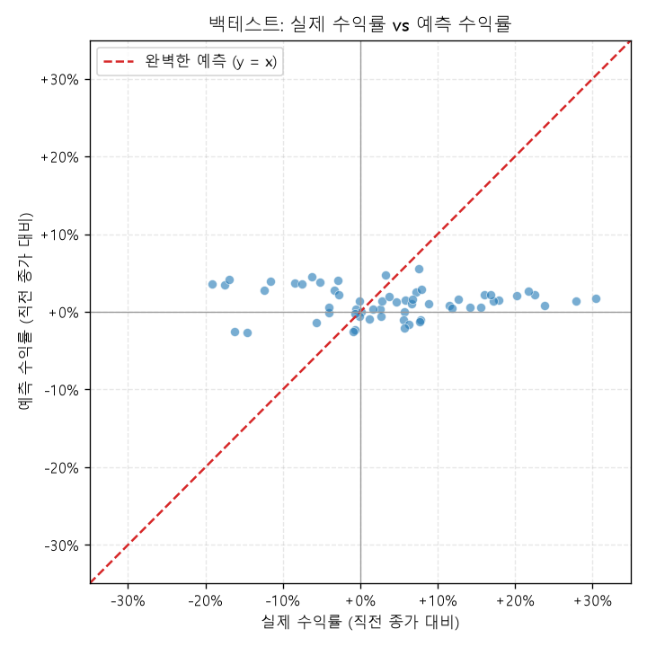

Chronos-Bolt(파운데이션 모델)와 감쇠추세 모델을 앙상블한 결과, 향후 5거래일 뒤 종가를 현재(1,879,500원) 대비 +1.99% (상승)한 1,916,935원 안팎으로 전망합니다 (10~90% 구간: 1,441,693원 ~ 2,491,412원). 같은 기간 수집된 국내외 뉴스 논조는 부정적(-0.23)으로, 예측치에 근거리일수록 크게 반영되었습니다. 참고로 과거 12개 구간 검증에서 이 앙상블의 평균 오차율(MAPE)은 8.9%, 방향 적중률은 62%였습니다.
최근 5거래일 SK하이닉스 누적 수익률은 -14.6%이며, 시장 전체 평균 -3.9%, 반도체 섹터 평균 -4.3%, 메모리 동종업계 평균 -6.5%와 비교됩니다. 시장·섹터·동종업계 평균 대비 괴리가 커, SK하이닉스 고유 이슈(실적/수급/개별 뉴스)가 더 크게 작용한 것으로 보입니다.
KR-FinBert-SC, 영어는 FinBERT로 각각 감성을 채점합니다. 검색어 중요도(목표주가·실적 뉴스는 가중치 상향)와 최신성(지수감쇠)을 곱해 가중평균합니다.
| 날짜 | 하한(10%) | 중앙값 | 상한(90%) |
|---|---|---|---|
| 2026-07-15 | 1,655,617 | 1,873,169 | 2,124,735 |
| 2026-07-16 | 1,578,232 | 1,878,296 | 2,234,053 |
| 2026-07-17 | 1,531,189 | 1,895,834 | 2,333,561 |
| 2026-07-20 | 1,489,161 | 1,908,598 | 2,417,520 |
| 2026-07-21 | 1,441,693 | 1,916,935 | 2,491,412 |
같은 데이터를 서로 다른 방식으로 보는 3개 모델의 중앙값 예측을 나란히 비교합니다. 모델 간 편차가 크면 그만큼 불확실성이 크다는 뜻입니다.
| 날짜 | Chronos-Bolt | 추세모델 | 기술적 지표(GBM) | 앙상블(감성반영 전) | 최종 예측(감성반영) |
|---|---|---|---|---|---|
| 2026-07-15 | 1,875,914 | 1,888,426 | 1,896,366 | 1,879,668 | 1,873,169 |
| 2026-07-16 | 1,876,687 | 1,895,065 | 1,930,212 | 1,882,200 | 1,878,296 |
| 2026-07-17 | 1,896,728 | 1,901,624 | 2,000,837 | 1,898,196 | 1,895,834 |
| 2026-07-20 | 1,910,847 | 1,908,104 | 2,053,664 | 1,910,024 | 1,908,598 |
| 2026-07-21 | 1,919,203 | 1,914,507 | 2,168,234 | 1,917,794 | 1,916,935 |
수집 뉴스 377건(국내 178건, 해외 199건, 중복 통합 후) 기준 가중평균 감성 점수: -0.23 (부정적) — 다음 거래일 예측 중앙값에 -0.35% 보정 반영 (거래일이 멀어질수록 보정 폭은 감소)
아래는 감성 융합에 영향을 크게 준 상위 기사입니다 (전체 377건 중 상위 25건 발췌):
| 구분 | 검색어 | 제목 | 감성 |
|---|---|---|---|
| 국내 | SK하이닉스 목표주가 | SK하이닉스, AI사이클 공급구조 변화 견인...목표주가 330만원 유지-현대차증권 - PRESS9 | 긍정 (+1.00) |
| 국내 | SK하이닉스 목표주가 | SK하이닉스 목표주가 ‘185만원’…충격의 증권가 리포트 나왔다 - 문화일보 | 부정 (-1.00) |
| 국내 | SK하이닉스 목표주가 | "HBM 가격 더 오른다"...증권가, SK하이닉스 목표주가 400만원대로 줄상향 - 조선일보 | 긍정 (+1.00) |
| 국내 | SK하이닉스 목표주가 | SK하이닉스 목표주가 ‘고작’ 185만원...BNK證 “수요 모멘텀 둔화” - 매일경제 (유사기사 3건 통합) | 부정 (-1.00) |
| 국내 | SK하이닉스 목표주가 | SK하이닉스 ADR 상장 D-1…애널리스트들 주가 전망 여전히 '긍정적' - 지디넷코리아 | 긍정 (+1.00) |
| 국내 | SK하이닉스 목표주가 | 주가 급락에도 목표가 '그대로'…SK하이닉스 두고 증권가 '동상이몽' - 글로벌이코노믹 | 부정 (-1.00) |
| 국내 | SK하이닉스 목표주가 | SK하이닉스 현 주가보다 낮은 목표가…BNK증권 185만원 제시 - 연합뉴스TV | 부정 (-1.00) |
| 국내 | SK하이닉스 목표주가 | “성장 꺾였나” SK하이닉스 영업익 전망치 감소 - 한경매거진&북 | 부정 (-1.00) |
| 국내 | SK하이닉스 목표주가 | SK하이닉스 2분기 영업익 62조원 하향 조정…연간 실적, 예상比 45.7% 증가 전망 - 위키리크스한국 | 부정 (-1.00) |
| 국내 | SK하이닉스 목표주가 | “끝나지 않은 반도체 랠리”…SK하이닉스, 목표주가 420만원 유지 - 매일경제 | 긍정 (+1.00) |
| 국내 | SK하이닉스 목표주가 | 'SK하이닉스 200만원 넘는데'…BNK증권, 목표가 185만원 제시 - 연합뉴스 | 긍정 (+0.99) |
| 국내 | SK하이닉스 목표주가 | 4일 전 "하이닉스 185만원 간다" 맞힌 보고서…"실적 기대 이하" 연이어 나왔다 [내가샀다] - 네이트 (유사기사 2건 통합) | 부정 (-0.99) |
| 국내 | SK하이닉스 목표주가 | 삼성전자·SK하이닉스 목표주가 왜 이렇게 다를까? - 2news.co.kr | 부정 (-0.99) |
| 국내 | SK하이닉스 목표주가 | 'ADR 호재' 덮은 실적 우려…SK하이닉스 200만 원 붕괴 - 연합인포맥스 | 부정 (-0.98) |
| 해외 | SK Hynix price target analyst | Upgrade: Analysts Just Made A Meaningful Increase To Their SK hynix Inc. (KRX:000660) Forecasts - simplywall.st | 긍정 (+0.96) |
| 해외 | SK Hynix price target analyst | SK hynix Inc. Stock 12‑Month Price Target Raised to KRW 3266251.43, Implies 12% Upside - TradingView (유사기사 4건 통합) | 긍정 (+0.95) |
| 해외 | SK Hynix price target analyst | Analyst Ratings | UBS Group: Raises SK Hynix’s Target Price to KRW 3.2 Million, Citing Three Upcoming Catalysts - 富途牛牛 | 긍정 (+0.94) |
| 국내 | SK하이닉스 목표주가 | 14% 폭락 이튿날…증권가는 SK하이닉스 목표가 '420만원' 상향 - 연합인포맥스 | 긍정 (+0.94) |
| 국내 | SK하이닉스 | "SK하이닉스 185만원 간다"…BNK증권 5일 전 보고서 재조명 - 연합뉴스TV (유사기사 2건 통합) | 긍정 (+0.93) |
| 해외 | SK Hynix price target analyst | SK Hynix stock plunges 10% after record Nasdaq debut: here’s what went wrong - TradingView | 부정 (-0.92) |
| 해외 | SK Hynix price target analyst | Hanwha lifts SK hynix target on AI-fueled stability, eyes Korea rerating - CHOSUNBIZ - Chosunbiz | 긍정 (+0.91) |
| 국내 | SK하이닉스 목표주가 | "추세 꺾인 거 맞았네" … '나홀로' SK하이닉스 폭락 경고한 BNK 리서치 재조명 - 뉴데일리 | 부정 (-0.90) |
| 해외 | SK Hynix price target analyst | SK Hynix stock soars 7%, drives KOSPI to all-time high above 8,000 - TradingView (유사기사 2건 통합) | 긍정 (+0.89) |
| 국내 | SK하이닉스 목표주가 | SK하이닉스 목표가 '185만 vs 420만'…증권가 시각 왜 갈렸나 - 인베스트조선 | 부정 (-0.89) |
| 해외 | SK Hynix price target analyst | SK Hynix Stock Lags, Despite Record Earnings - 조선일보 | 부정 (-0.88) |
SK하이닉스의 움직임이 시장 전체/반도체 섹터/메모리 동종업계 중 어디에 더 가까운지 참고할 수 있는 최근 180일 추세 비교 및 일별 수익률 상관계수입니다.

| 분류 | 종목/지수 | 상관계수 | 강도 |
|---|---|---|---|
| 시장 전체 | 코스피 | +0.83 | 강함 |
| 시장 전체 | S&P500 | +0.11 | 약함 |
| 시장 전체 | 나스닥 | +0.14 | 약함 |
| 반도체 섹터 | 필라델피아반도체지수(SOX) | +0.22 | 약함 |
| 메모리 동종업계 | 삼성전자 | +0.72 | 강함 |
| 메모리 동종업계 | Micron | +0.34 | 보통 |
| 메모리 동종업계 | SanDisk | +0.20 | 약함 |
각 지수 전체를 매번 스캔하기보다(수백 종목, 실행 시간·API 호출 부담), 지수를 대표하는 표본 종목들과의 상관관계를 계산해 SK하이닉스와 가장 동조하는 종목을 지수별로 보여줍니다. 전체 지수 구성종목 중 상관관계 1위라는 뜻이 아니라, 아래 표본 안에서의 순위입니다.
| 지수 | 종목 | 상관계수 | 강도 |
|---|---|---|---|
| 코스피200 (대표종목) | 삼성전자 (005930.KS) | +0.78 | 강함 |
| 코스피200 (대표종목) | 한미반도체 (042700.KS) | +0.57 | 보통 |
| 코스피200 (대표종목) | 삼성전기 (009150.KS) | +0.55 | 보통 |
| 코스피200 (대표종목) | 기아 (000270.KS) | +0.43 | 보통 |
| 코스피200 (대표종목) | 현대차 (005380.KS) | +0.42 | 보통 |
| 코스피200 (대표종목) | 현대모비스 (012330.KS) | +0.40 | 보통 |
| 코스피200 (대표종목) | 삼성SDI (006400.KS) | +0.39 | 보통 |
| 코스피200 (대표종목) | 카카오 (035720.KS) | +0.38 | 보통 |
| 나스닥100 (대표종목) | Costco (COST) | -0.29 | 약함 |
| 나스닥100 (대표종목) | Lam Research (LRCX) | +0.27 | 약함 |
| 나스닥100 (대표종목) | Applied Materials (AMAT) | +0.25 | 약함 |
| 나스닥100 (대표종목) | ASML (ASML) | +0.23 | 약함 |
| 나스닥100 (대표종목) | Adobe (ADBE) | -0.22 | 약함 |
| 나스닥100 (대표종목) | KLA (KLAC) | +0.21 | 약함 |
| 나스닥100 (대표종목) | Netflix (NFLX) | -0.19 | 약함 |
| 나스닥100 (대표종목) | AMD (AMD) | +0.18 | 약함 |
| S&P500 (대표종목) | Walmart (WMT) | -0.24 | 약함 |
| S&P500 (대표종목) | Coca-Cola (KO) | -0.23 | 약함 |
| S&P500 (대표종목) | Chevron (CVX) | -0.23 | 약함 |
| S&P500 (대표종목) | GE Aerospace (GE) | +0.22 | 약함 |
| S&P500 (대표종목) | Caterpillar (CAT) | +0.21 | 약함 |
| S&P500 (대표종목) | Visa (V) | -0.19 | 약함 |
| S&P500 (대표종목) | Procter & Gamble (PG) | -0.19 | 약함 |
| S&P500 (대표종목) | Exxon Mobil (XOM) | -0.19 | 약함 |
가장 최근 5거래일을 정답으로 숨기고, 그 이전 데이터까지의 정보만으로 같은 방식으로 예측해본 결과입니다.
MAE: 145,357원 · MAPE: 7.59% (naive 기준 8.81%) · 방향 적중률: 100%
| 실제 종가 | 예측 종가 | 오차 |
|---|---|---|
| 2,076,000 | 2,169,453 | +4.50% |
| 2,186,000 | 2,150,178 | -1.64% |
| 2,180,000 | 2,144,034 | -1.65% |
| 1,845,000 | 2,144,317 | +16.22% |
| 1,879,500 | 2,141,725 | +13.95% |
과거 12개 시점 각각에서 "그 시점까지의 데이터만" 사용해 반복적으로 예측/채점한 결과입니다 (walk-forward, look-ahead 없음). 앙상블 모델을 Chronos 단독, naive(직전값 유지) 기준과 함께 비교합니다.
앙상블 평균 MAPE: 8.93% (표준편차 4.39%p) · Chronos 단독 평균 MAPE: 9.35% · naive 평균 MAPE: 8.75% · 방향 적중률: 62%

롤링 백테스트에서 나온 모든 예측 구간을 "직전 종가 대비 실제 수익률(가로축)"과 "직전 종가 대비 예측 수익률(세로축)"로 점을 찍은 것입니다. 점이 빨간 대각선(y=x)에 가까울수록 정확한 예측이고, 대각선과 같은 사분면(1·3사분면)에 있으면 방향은 맞춘 것입니다.

snunlp/KR-FinBert-SC(한국어), ProsusAI/finbert(영어) — 둘 다 금융 도메인 특화 사전학습 모델amazon/chronos-bolt-base(사전학습 시계열 파운데이션 모델) + 감쇠추세 지수평활(statsmodels) 앙상블, 기술적 지표 기반 gradient boosting 분위수 회귀(scikit-learn) 비교 모델